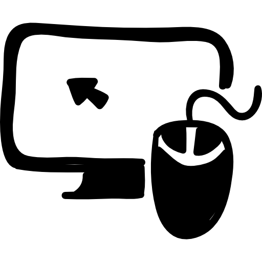

I’m a self-taught
front-end developer, writing
code and moving pixels in the www  . I’m currently pursuing a BA in
Design Management, seeking to create human-centred design for and with people . When
the internet is down you can find me frolicking in the woods or alps , cooking
or reading a book .
I am open to internships and full-time positions in the front-end
development or service design field.
 . When
the internet is down you can find me frolicking in the woods or alps
. When
the internet is down you can find me frolicking in the woods or alps .png) , cooking
or reading a book .
, cooking
or reading a book .